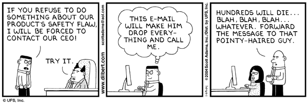
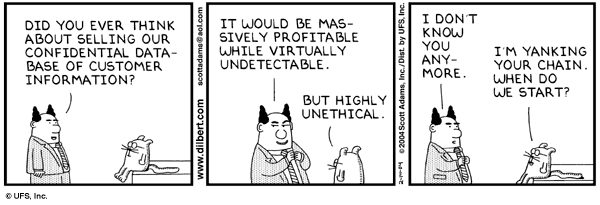

- Intellectual Property
- EFF "Intellectual Property Online: Patent, Trademark, Copyright" Archive
- Intellectual Property Issues
- Selected Papers by Pamela Samuelson [regarding intellectual property and the law]
- EFF "Intellectual Property Online: Patent, Trademark, Copyright" Archive
- Copyright Law in the United States (BitLaw)
- SUL: Copyright & Fair Use
- Timeline: A History of Copyright in the U.S.
- Chilling Effects Clearinghouse: Copyright
- FAQ about Copyright -- Chilling Effects Clearinghouse
- A Mickey Mouse Copyright Law?
- Mickey Mouse vs. The People
- FindLaw's Writ - Sprigman: The Mouse That Ate The Public Domain
- exerpt from Melancholy Elephants
- Melancholy Elephants by Spider Robinson Science Fiction regarding perpetual copyright.
- Reverse Engineering:
- Chilling Effects Clearinghouse: Reverse Engineering
- FAQ about Reverse Engineering -- Chilling Effects Clearinghouse
- CNN.com - Technology - Battle brews over reverse engineering - May 8, 2000
- Sony dealt PlayStation setback in ruling - Tech News - CNET.com [re. reverse engineering]
- Reverse Engineering and the Rise of Electronic Vigilantism: Intellectual Property Implications of "Lock-Out" Programs
- FAQ about Anticircumvention (DMCA) -- Chilling Effects Clearinghouse
- FAQ about DMCA Safe Harbor Provisions -- Chilling Effects Clearinghouse
- Anticircumvention Rules: Threat to Science, by Pamela Samuelson
- Smart Cow Problem - Wikipedia
- Java Tip 22: Protect your bytecodes from reverse engineering/decompilation
- The Mac Observer: The Back Page - Microsoft Seen As Offering Heavy Hand To Oregon Schools
- Digital Watermarks & Steganography:
- Digital Watermarking - Wikipedia
- Digital Watermarking Links
- digital watermark - Webopedia.com
- Digital Watermarks: New Tools for Copyright Owners and Webmasters
- Digimarc | Digimarc Introduces Readmarc Free Digital Watermark Reader Software
- Steganography - Wikipedia
- Steganography & Digital Watermarking [links]
- Digital Steganography [technical paper]
- Digital Watermarking Links
- Open/Free SW movement:
- Open Source Resources: Bibliography of Research and Analysis
- Proprietary Standards:
- Best Practice Manual part two: Proprietary Standards
- GIF - Wikipedia
- Burn All GIFs
- Vorbis.com - Open, Free Audio
- Why artists should be using Ogg Vorbis
- GIF - Wikipedia
- Free Software
- Open Source
- The Open Source Initiative: Home Page
- History of the OSI
- Advocacy
- The Open Source Case for Hackers
- Open Source Case for Business
- The Open Source Case for Hackers
- jobs
- Software Secrets: Do They Help or Hurt?
- Case Studies and Press Coverage
- Open Source Case for Business
- Advocacy
- ACM Queue magazine, Vol. 1 No. 5 - July/August 2003 Special issue on Open Source
- The Agoric Papers
- The Cathedral and the Bazaar
This page includes the following essays with external commentary:- The Cathedral and the Bazaar (explores the Open Source movement more generally)
- Homesteading the Noosphere (examines in detail the property and ownership customs of the open-source culture)
- The Magic Cauldron (analyzes the economics of open-source software)
- Homesteading the Noosphere (examines in detail the property and ownership customs of the open-source culture)
- Open Source: The Cathedral and the Bazaar
- Linux in Higher Education: Open Source, Open Minds, Social Justice
- Free Software Foundation - GNU Project - Free Software Foundation (FSF)
- Philosophy of the GNU Project - Free Software Foundation (FSF)
- Licenses
- What Is Copyleft?
- Copyleft: Pragmatic Idealism
- Why no GIFs - GNU Project - Free Software Foundation (FSF)
- Why you shouldn't use the Library GPL for your next library
- Welcome to GPLv3
- Licenses
- Lawyers Express GPL 3 Concerns
- CNET News: Torvalds: No GPL 3 for Linux
- LPPL: the LaTeX Project Public License
- Open Source Software / Free Software (OSS/FS) References
- The Open Source Initiative: Advocacy Home Page
- Jobs for Hackers: Yes, You Can Eat Open Source
- Computer News: How Does the Capitalist View Open Source?
- Why Open Source Software / Free Software (OSS/FS)? Look at the Numbers!
- Earning Money -- and Exposure -- with Open Source
- Reverse-engineering the GNU Public Virus: Is copyleft too much of a good thing?
- Proprietary Standards:
- DMCA and UCITA Controversy:
- Digital Speech Project
- About the DMCA
- Welcome to the Anti-DMCA Website
- About the Digital Millennium Copyright Act
- How the DMCA Affects Us
- Engineering Institute Will Drop Form Pledging Adherence to [DCMA] Copyright Act
- UCITA Online
- What is UCITA
- EFF "Intellectual Property - Digital Millennium Copyright Act (DMCA)" Archive
- Why We Must Fight UCITA, by Richard Stallman
- Some new shrink-wrap license terms seem tailor-made for UCITA
- UCC 2B: The New Law of Shrink-Wrap
- EFF "Censorship & Free Expression - SLAPPs - Abuse of Intellectual Property Law, Cease & Desist, and Notice and Takedown" Archive
- EFF "Intellectual Property: Digital Millennium Copyright Act (DMCA): U.S. v. ElcomSoft & Sklyarov" Archive
- Unintended Consequences: Seven Years under the DMCA
- DRM:
- Digital Rights Management - Wikipedia
- EFF: Digital Rights Management and Copy Protection Schemes
- EFF: The Customer Is Always Wrong: A User's Guide to DRM in Online Music
- DefectiveByDesign.org | The Campaign to Eliminate DRM
- DRM Watch - Analysis of Digital Rights Management Technology
- DeCSS - Wikipedia
- EFF: Digital Rights Management and Copy Protection Schemes
- SW Patents:
- IP Info (SLWK Law Partnership)
- Viability of Software and Algorithm Patents Revisited
- Software Patent Index (BitLaw)
- Software Is Now Patentable
- The History of Software Patents
- Why Protect Software Through Patents
- Patent Requirements
- Bad Software Patents
- The History of Software Patents
- Software Patent Institute and its Database of Software Technologies
- Trademarks:
- Basic Facts About Trademarks
- TRADEMARK, COPYRIGHT OR PATENT?
- Trademarks on the Internet (BitLaw)
- Trade Secrets:
- Entrance to THE TRADE SECRETS HOME PAGE
- HOW TO PROTECT INTELLECTUAL PROPERTY RIGHTS IN COMPUTER SOFTWARE
- TRADE SECRETS AND THE SOFTWARE DEVELOPMENT PROCESS
- AVOIDING LEGAL ENTANGLEMENTS ON THE WEB
- TRADE SECRETS AND THE SOFTWARE DEVELOPMENT PROCESS
- HOW TO PROTECT INTELLECTUAL PROPERTY RIGHTS IN COMPUTER SOFTWARE
- General & Misc. Law:
- BitLaw: A Resource on Technology Law
- Resources For Intellectual Property Law and Technology Law
- The Cyberlaw Encyclopedia version 2.0
- Contracts and Forms Index (BitLaw)
- U.S. Constitution - Article I
- Intellectual Property and the National Information Infrastructure
- Resources For Intellectual Property Law and Technology Law
- International IP:
- International Legal Protection for Software
- WIPO - World Intellectual Property Organization
- Berne Convention Treaty (1928) on copyright
- BERNE CONVENTION FOR THE PROTECTION OF LITERARY AND ARTISTIC WORKS (Paris Text 1971)
- COPYRIGHT, INTERNATIONAL
- WIPO - World Intellectual Property Organization
- SUL: Copyright & Fair Use
Privacy:
- Franklin's Liberty quote
- Ethics in Computing: Privacy
- EPIC Online Guide to Privacy Resources
- Privacy.org
- Technology and Telecom Studies at the Cato Institute
- Junkbusters
- Privacilla.org
- The PRIVACY Forum
- TRUSTe: Make Privacy Your Choice
- Privacy and American Business
- Privacy International
- Privacy and Human Rights 2000: an international survey of privacy laws and developments
- Privacy and Human Rights 2001: an international survey of privacy laws and developments
- Privacy and Human Rights 2002: an international survey of privacy laws and developments
- Privacy and Human Rights 2003: an international survey of privacy laws and developments
- Privacy Rights Clearinghouse
- Privacy Links to Other Resources
- How Private Is My Medical Information?
- Employee Monitoring: Is There Privacy in the Workplace?
- Privacy In Cyberspace: Rules of the Road for the Information Superhighway
- Telemarketing Calls: Whatever Happened to a Quiet Evening At Home?
- Reducing Junk Mail: How Did They All Get My Address?
- How Private Is My Medical Information?
- Urban Legends Reference Pages: Ice Cream Draft Notice
- HTTP cookie - Wikipedia
- spyware - Wikipedia
- Privacy Law - Wikipedia
- Patriot Act - Wikipedia
- Electronic Frontier Foundation
- EFF's Top 12 Ways to Protect Your Online Privacy
- Patriot Act - EFF
- TIA - EFF
- Privacy, Security, Crypto, & Surveillance" Archive
- EFF "Censorship - Homolka-Teale-Bernardo Case Media Ban & Wired Censorship" Archive {example from Canada illustrating differences in legal system interpretations}
- Patriot Act - EFF
- EU privacy directive
- Briefing Materials on the European Union Directive on Data Protection
- Data Mining and Domestic Security: Connecting the Dots to Make Sense of Data
- GAO: Fed Data Mining Extensive
- Government's pursuit of personal data lives on
- Ten Privacy Principals for Health Care
- Health Privacy Project
- Medical Privacy Coalition
- SSN FAQ [CPSR]
- Using a False Social Security Number
- Identity Theft Resource Center (ITRC)
- Identity Theft Resources
- ACLU: American Civil Liberties Union
- ACLU: Privacy
- ACLU: Racial Profiling
- ACLU: Racial Profiling Report
- ACLU: Racial Profiling
- Net Privacy Advocates Slam Profiling
- ITAA-FTC comment on online profiling
- Canadian government report on computer matching and profiling
- Anti-SPAM Laws
- Existing and Emerging Laws on Junk E-mail
- TechTV | The FBI's 'Magic Lantern'
- FBI Has a Magic Lantern
- Carnivore FAQ
- Carnivore, Altivore, Echelon Three big names in the world of network monitoring.
- EFF "Privacy - Surveillance & Wiretapping" Archive
- EFF: Surveillance Monitor
- Dorothy Denning's Publications
- Dorothy Denning's Links
- The CryptoRights Foundation
- Echelonwatch
- Echelonwatch
- FBI
- NSA
- Counterpane Internet Security, Inc.
- Why Cryptography Is Harder Than It Looks by Bruce Schneier
- Cipher: The Newsletter of the IEEE Computer Society Technical Committee on Security and Privacy
- Americans for Computer Privacy
- Ross Anderson's Home Page[author of the {/em Security Engineering} text]
- Economics and Security Resource Page
- Ethics in Computing: Privacy
Risks:
- Ethics in Computing: Risks
- RISKS Forum [newsgroup] Digest
- CACM Inside Risks
- An Enemy of the People - Wikipedia
- The Patriot Missile Failure
- The Explosion of the Ariane 5
- Build Security In Home (Dept. of Homeland Security)
- Web Sites
- Seven Objectives of Software Assurance Sound Practices
- Architectural Risk Analysis (identifies flaws in a software architecture)
- Software Assurance Common Body of Knowledge
- Coding Practices
- Coding Rules
- Guidelines
- Seven Objectives of Software Assurance Sound Practices
- Basic Integer Overflows
- Big Loop Integer Protection
- The Rising Threat of Vulnerabilities Due to Integer Errors
- Integer Handling with the C++ SafeInt Class by David LeBlanc
- Integer Handling with the C++ SafeInt Class by David LeBlanc
- Another Look at the SafeInt Class by David LeBlanc
- Reviewing Code for Integer Manipulation Vulnerabilities
- Re: GCC optimizes integer overflow: bug or feature?
- Secure Coding in C and C++: Of Strings and Integers
- Writing Secure Code (MSDN)
- Security Tips: Defend Your Code with Top Ten Security Tips Every Developer Must Know -- MSDN Magazine, September 2002 (MSDN)
- 8 Simple Rules For Developing More Secure Code (MSDN)
- Guidelines for Writing Secure Code (MSDN wrt VS)
- Threat Modeling (MSDN)
- Safety-Critical Mailing List Archive 1998: C++ for safety
- Use of the C++ Programming Language in Safety Critical Systems
- Threading Secure Coding Principles and Risk Analysis into the Undergraduate Computer Science and Information Systems Curriculum
- Secure Coding in C and C++, By Robert C. Seacord(book)
- Writing Secure Code, Second Edition, by Michael Howard and David LeBlanc(book)
Pentium Flaw
- The Intel Pentium Bug -- The Technical Details - Edelman
- The Improbability of Probabilistic Error Analyses for Numerical Computations - Kahan
Safety Critical SW:
- Safety Critical Software
- Safety-Critical Systems
Computer Modeling:
- Ethics in Computing: Risks: Use of Computer Models
- Simulation Has Its Limits
- Computational Science Education Project
- How Significant is the Role of Algorithm and Computer Technology Developments?
- Sensitivity to initial conditions:
- Strange Attractors: Lorentz's Butterfly
- Lorentz's Butterfly
- Butterfly Effect
- Lorentz's Butterfly
- Discrete Simulation
- Discrete Simulation
- Writing a Discrete Event Simulation: ten easy lessons
- Systems and Simulation links
- Discrete Events Systems Simulation Resources
- Writing a Discrete Event Simulation: ten easy lessons
- Simulation Has Its Limits
- RISKS Forum [newsgroup] Digest
Work & Wealth:
- The Internet and Economics
- The Information Economy
- Program for Research on the Information Economy
- Grid Computing Info Centre
- Financial Scandals: A Guide with Links to Information Sources
- Psychology of Risk, Speculation and Fraud
- Anatomy of the Economic Crisis: Tulip mania and today's speculation
- Roll in the 1987 crash
- EMERGENCE: Estimation and Mapping of Employment Relocation in a Global Economy in the New Communications Environment
- Socio-Economic Trends Assessment for the digital Revolution
- Outsourcing - Wikipedia
- The Outsourcing Institute
- Outsourcing Technology News
- The Future of Outsourcing
- Where the Butterfly Alights: The Global Location of eWork
- When Work Takes Flight
- Biggest export for tech firms: Their workload
- Tech Jobs Become State's Unwanted Big Export [CA]
- DESKILLING AND DOWNSIZING: SOME THOUGHTS ABOUT THE FUTURE OF TECHNICAL EDUCATION
- Programming jobs are heading overseas by the thousands. Is there a way for the U.S. to stay on top?
- The Great Outsourcing Scare of 2004
- 'Outsourcing' isn't the scare word it used to be
- 'The Pitfalls of Outsourcing Programmers
- Outsourcing (search in Businessweek)
- The Software Pyramid(job categories & salaries)
- IT recruitment(customer service mentality sought)
- ACM Queue - New World Order - The new world order for programmers (distributed development focus)
- ACM Queue - Culture Surprises in Remote Software Development Teams - You can't hide from culture, yours or anyone else's
- ACM Queue - The Sun Never Sets on Distributed Development - People around the world can work around the clock on a distributed project, but the real challenge lies in taming the social dynamics
- ACM Queue - Distributed Development Lessons Learned - Why start with a tabula rasa?
- ACM Queue - The Sun Never Sets on Distributed Development - People around the world can work around the clock on a distributed project, but the real challenge lies in taming the social dynamics
- Employee Monitoring: Is There Privacy in the Workplace?
- Does Your Car Have a Black Box? - Event data recorders know when you've been speeding, and when you've hit the brake.
- Slashdot | California Protects Black-Box Data Privacy
- Computer Related Repetitive Strain Injury
- Risks Digest: Droidism
- Primitivism
- All your base are belong to us
- The New York Review of Books: He's Got Mail(On the difficulty of predicting technological advance speed and effect)
- Boston Review: Is the Internet Good for Democracy?
- Amazon.com: Books: Bad Predictions
- The Information Economy
Network Security
- Malware - Wikipedia
- Grayware - Wikipedia
- Phishing - Wikipedia
- US CERT
- CERT Coordination Center CMU
- Build Security In Home (Dept. of Homeland Security)
- Evolutionary Design of Secure Systems - The First Step Is Recognizing the Need for Change
- Introduction to Attack Patterns
- Assurance Cases
- Introduction to Attack Patterns
- The RFID Guardian: a firewall for your tags
- Peer-to-peer poisoners: A tour of MediaDefender
Security Patterns
- Security Patterns (.org)
- Security Patterns
- Security Forum - Guide to Security Patterns
- Evolutionary Design of Secure Systems - The First Step Is Recognizing the Need for Change
Utility Software:
- Ghostscript, Ghostview and GSview
Dilbert (TM) and ethics
From dilbert.com




